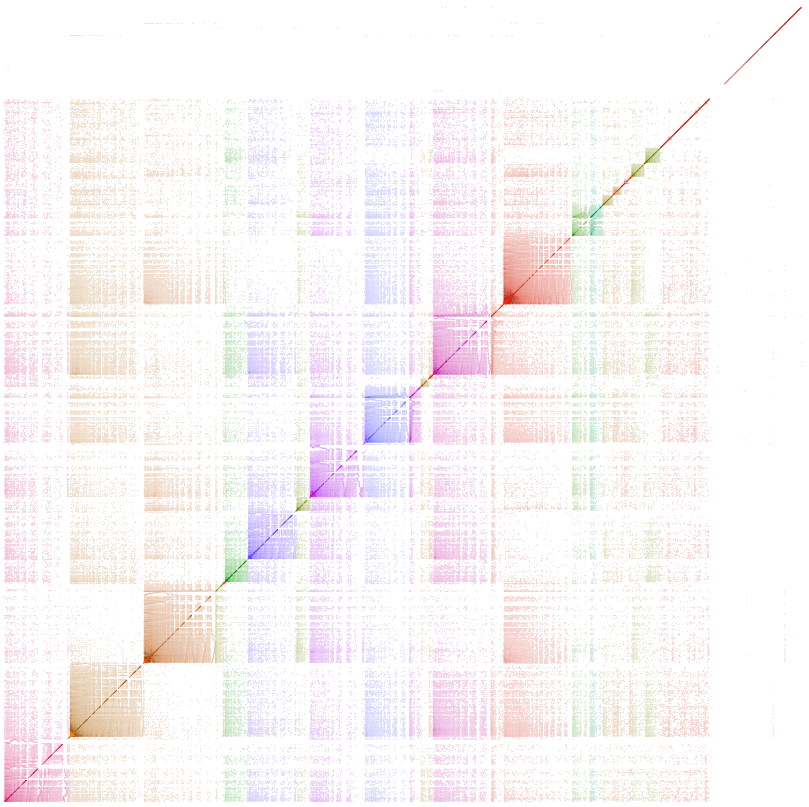

Collaboration Network in Physics

Figure 1. Scalable Force-Directed Placement (Hu 2005) Layout of Co-author Network, 2012 data only
Nodes: authors (V ≈ 82,000); Edges: collaborations (E ≈ 207,000); unweighted
Figure 2. Scalable Force-Directed Placement (Hu 2005) Layout of Co-author Network, all data
Nodes: authors (V ≈ 321,000); Edges: collaborations (E ≈ 1,432,000); unweighted
Figure 3. Space-filling Graph Layout (Muelder 2008) of Co-author Network, all data
Using fast modularity clustering algorithm; Nodes: authors (V ≈ 321,000); Edges: collaborations (E ≈ 1,432,000); weighted by number of collaborations

Figure 4. Space-filling Graph Layout (Muelder 2008) of Co-author Network, all data
Using fast modularity clustering algorithm; Nodes: authors (V ≈ 321,000); Edges: collaborations (E ≈ 1,432,000); weighted by number of collaborations

Figure 5. Space-filling Graph Layout (Muelder 2008) of Co-author Network, all data
Using fast modularity clustering algorithm; Nodes: authors (V ≈ 321,000); Edges: collaborations (E ≈ 1,432,000); weighted by number of collaborations

Figure 6. Adjacency matrix of Co-author Network, all data
Using fast modularity clustering algorithm; Nodes: authors (V ≈ 321,000); Edges: collaborations (E ≈ 1,432,000)